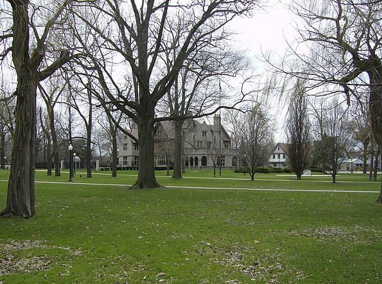
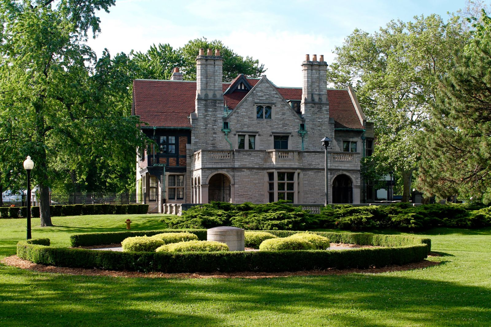

Willistead Park
Address: 1899 Niagara St., Windsor, ON
sourced from Wikimedia Commons
sourced from Art in the Park
Willistead Park is a picturesque landscape that serves as the grounds for the historic Willistead Manor, the former home of Edward and Mary Walker, son of the distillery magnate Hiram Walker. This 15.5-acre park, designed in the classic English landscape tradition, offers a serene and elegant atmosphere in the heart of the Walkerville neighbourhood. Its grand lawns, mature trees, and winding pathways create a peaceful retreat for visitors. The park is a popular venue for community events, including the annual "Art in the Park" festival, which attracts artisans and visitors from across the region. The magnificent architecture of the manor provides a stunning backdrop, making the park a favourite location for weddings and photography. Willistead Park is more than just a beautiful space; it's a piece of Windsor's history, preserving the legacy of the Walker family and offering a timeless setting for community gathering and quiet enjoyment.